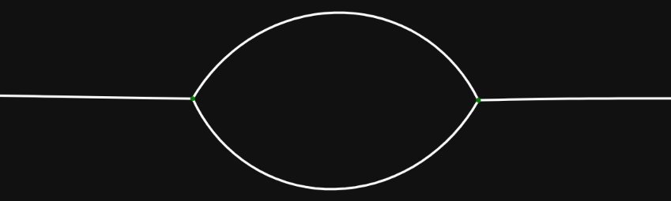

standard and non-standard
Isoperimetric Partitions
[E. Paolini: Università di Pisa]
Riccione ‐ Feb 9, 2026
Partitions
$\mathbf E = (E_1, E_2, \ldots, E_N)$

$E_k \subseteq \mathbb R^d$,
$\lvert E_k \cap E_j \rvert = 0$ for $k \neq j$,
$\left\vert \mathbb R^d \setminus \displaystyle\bigcup_{k=1}^N E_k \right\vert = 0$
$\left\vert \mathbb R^d \setminus \displaystyle\bigcup_{k=1}^N E_k \right\vert = 0$
isoperimetric partitions
$$\mathrm{Per}(\mathbf E, B)
= \frac 1 2 \sum_{k=1}^N \mathrm{Per}(E_k, B)$$
References
-
(INdAM 2025)
On a Free-Endpoint Isoperimetric Problem in $\R^2$ -
(TAMS 2025)
the standard lens cluster in $\R^2$ uniquely minimizes relative perimeter -
(arXiv 2024)
an infinite double bubble theorem - (arXiv 2025) On the non-uniqueness of locally minimizing clusters via singular cones
References
-
(TAMS 2025)
locally isoperimetric partitions -
(cvgmt 2025)
existence of a non-standard isoperimetric partition
thank you!